There is a quiet change going on when it comes to how Intune admins manage devices today, that being the surge of demand to support users on macOS. Over the past 18 months in particular lots of organisations have seen this shift towards supporting / enabling their users to use their MacBooks, and why is that?
In a nutshell, its down to two things. The first of which is the rising cost of traditional laptops, and also down to something called Platform SSO, a feature that allows your MacBook to automatically map the local user account to an Entra ID account, while also joining the device to Entra ID.
The benefit of Platform SSO is that you have all of the single sign-on (SSO) authenticated features you would expect from being “domain or Entra ID joined”, and make the entire usability of macOS more like your typical Windows experience. Combine this with the mind-blowing fact that MacBooks can be cheaper than traditional Windows-based laptops, and you can understand why more and more people are asking for one.
The additional fact here is that Microsoft Intune as a management platform has grown massively over the past 18 months when it comes to its abilities to manage macOS. Organisations that previously had to incur additional licensing costs are now once again looking at macOS directly managed through Intune, and discovering that in many areas, managing the device and in particular the end user experience, is very compariable with Windows.
The User Experience – Before Today
The user experience and onboarding experience today are very closely tied when it comes to Windows devices, as we are now in a world where you can ship the device to the end user. So parking the configuration elements to one side, for a later series of blog posts on macOS management, lets go back to the onboarding.
For the most part, since Platform SSO was introduced, the onboarding process is painless, with the user running through the initial setup, setting up the local account, before providing the user with a dialogue post delivery to the desktop.
They then sign in, and their accounts get linked, and the device is joined to Entra.
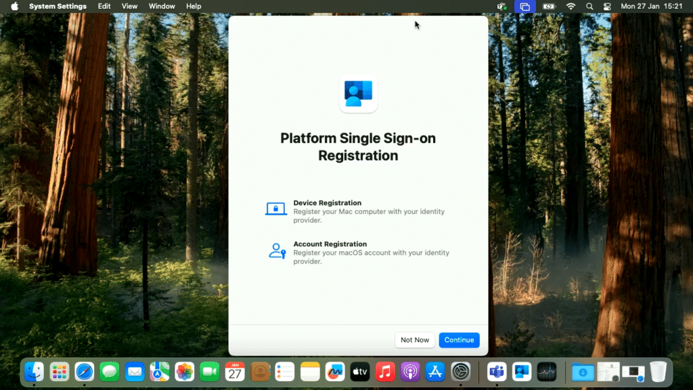
There can, however, be issues where multiple notifications appear at the same time, hiding the “Registration Required ” prompt and sometimes causing a delay in the process. Without the user knowing where to go to force this process to start, they often have to wait for the slide-in dialogue to reappear, and that can cause some minor frustration.
But today, thankfully, even this has been solved, read on..
The User Experience Today – Much Improved
Today heralds a new dawn for simplicity with the arrival of new configuration options and a new version of the Intune Company Portal, that now supports the registration of the user SSO and device join during the initial setup screens.
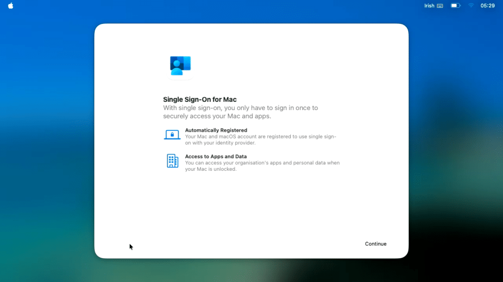
This means that when the user gets to the desktop, everything is already in place!.. The user then simply gets delivered to the desktop and is productive, nice!
The Setup Process
Let’s run through the prerequisites first, as there are both OS and configuration policy requirements in order to implement the new functionality.
Prerequisites
|
Requirement |
Details |
|
macOS version |
macOS 26 and newer |
|
Enrollment method |
ADE via Apple Business |
|
Intune Company Portal |
Version 5.2604.0 or newer, deployed as a LOB app. Download from https://go.microsoft.com/fwlink/?linkid=853070 |
|
Intune role for configuration |
Admin account with at least the Policy and Profile Manager built-in role |
|
Group type |
Assigned (static) user groups only. Dynamic groups and device groups are not supported. |
Configuration
To leverage the new capability, we need to first of all ensure that our enrollment profile is configured correctly, and the devices we wish to run through the process are assigned.
Going into the Microsoft Intune Admin Center UI, we then go to
- Devices
- Enrollment
- Apple
- Enrollment Program Tokens
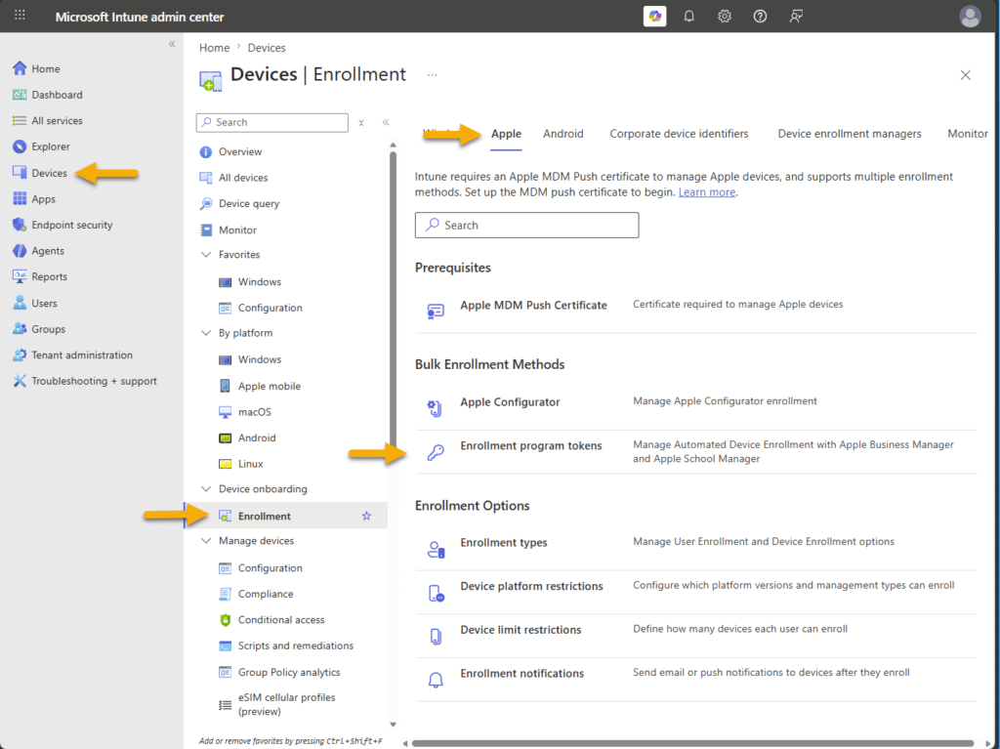
- Now we need to click on the token, go to profiles, and create a new profile
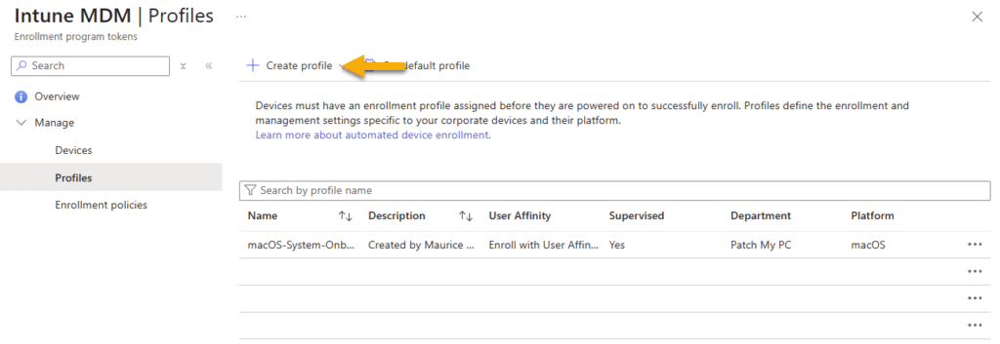
- Creating a new macOS policy and providing a name, we then want to use the following selections on the Management Settings page
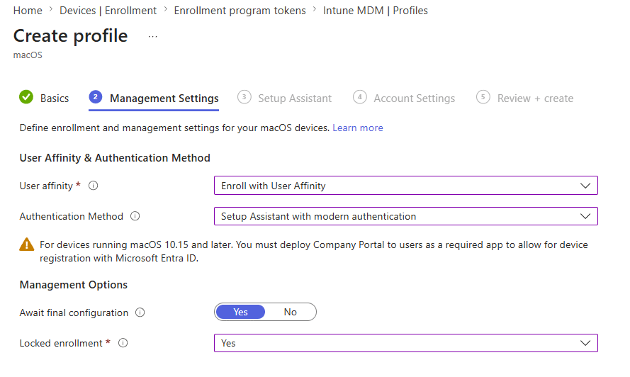
| Setting | Value |
| User affinity | Enroll with User Affinity |
| Authentication | Setup Assistant with modern authentication |
| Await final configuration | Yes |
| Locked enrollment | Yes |
- Complete the policy configuration, showing or disabling pages as you see fit. Below is an example;
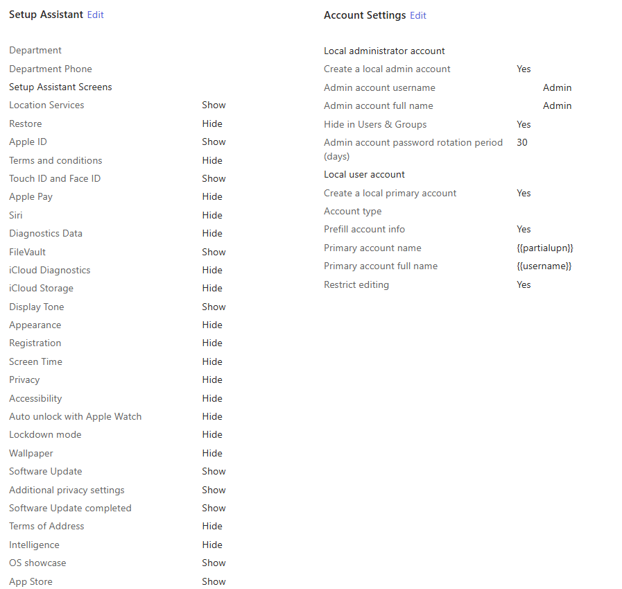
- The policy should then be assigned to the devices you wish to onboard
The next step is to create a Settings Catalog policy and assign this to a static user group, or alternatively “all users” as per the below example;
| Setting: Extensible Single Sign On (SS0)\Extension Identifier Value: com.microsoft.CompanyPortalMac.ssoextension Setting: Extensible Single Sign On (SS0)\Platform SSO\Authentication Method Value: UseSecureEnclaveKey* Setting: Extensible Single Sign On (SS0)\Platform SSO\Enable Create User At Login Value: Enabled Setting: Extensible Single Sign On (SS0)\Platform SSO\Enable Registration During Setup Value: Enabled Setting: Extensible Single Sign On (SS0)\Platform SSO\New User Authorization Mode Value: Standard Setting: Extensible Single Sign On (SS0)\Platform SSO\Token To User Mapping\Account Name Value: preferred_username Setting: Extensible Single Sign On (SS0)\Platform SSO\Token To User Mapping\Full Name Value: Name Setting: Extensible Single Sign On (SS0)\Platform SSO\Token To User Mapping\Use Shared Devices Keys Value: Enabled Setting: Extensible Single Sign On (SS0)\Platform SSO\Registration Token Value: {{DEVICEREGISTRATION}} Setting: Extensible Single Sign On (SS0)\Platform SSO\Screen Locked Behaviour Value: Do Not Handle Setting: Extensible Single Sign On (SS0)\Platform SSO\Team Identifier Value: UBF8T346G9 Setting: Extensible Single Sign On (SS0)\Platform SSO\Type Value: Redirect Setting: URLs Values: https://login.microsoftonline.com https://login.microsoft.com https://sts.windows.net |
Microsoft recommends the use of the Secure Enclave, to provide the hardware secured security, however, if you are using Password instead of this, it is recommended to add the password sync function;
| Setting: Extensible Single Sign On (SS0)\Platform SSO\Enable Creation First User During Setup Value: Enabled |
Company Portal App
The next thing we need to do is deploy an updated version of the Microsoft Company Portal application. To do this, we need to download build 5.2604.0 or higher and deploy this as a line of business app (LOB);
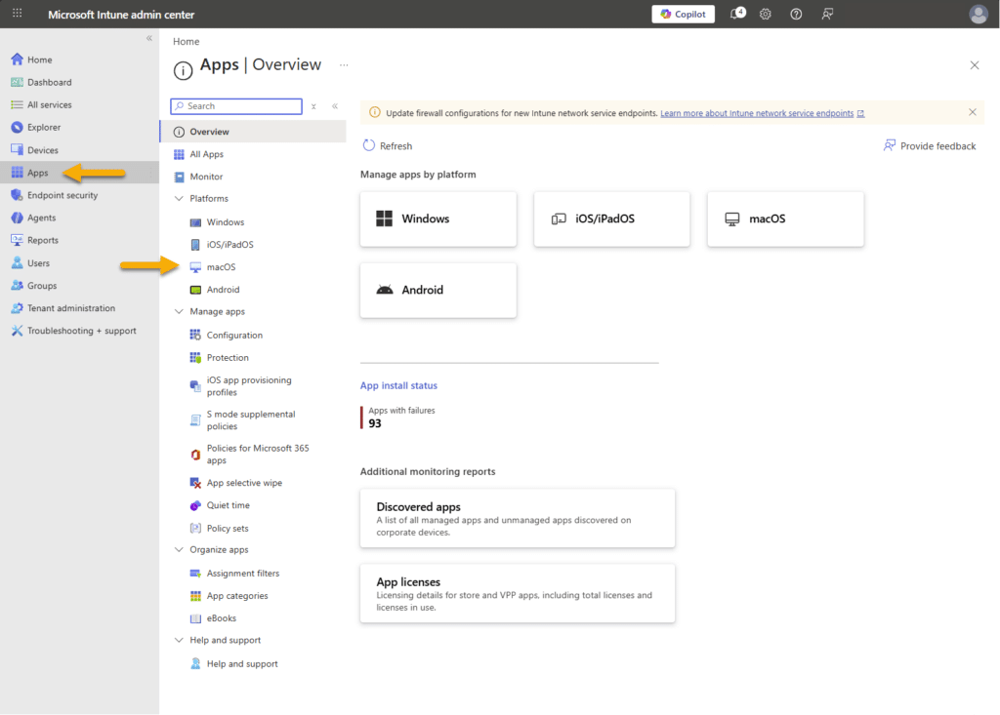
- Click on “+ Create” and then select “Line-of-business app” from the drop down
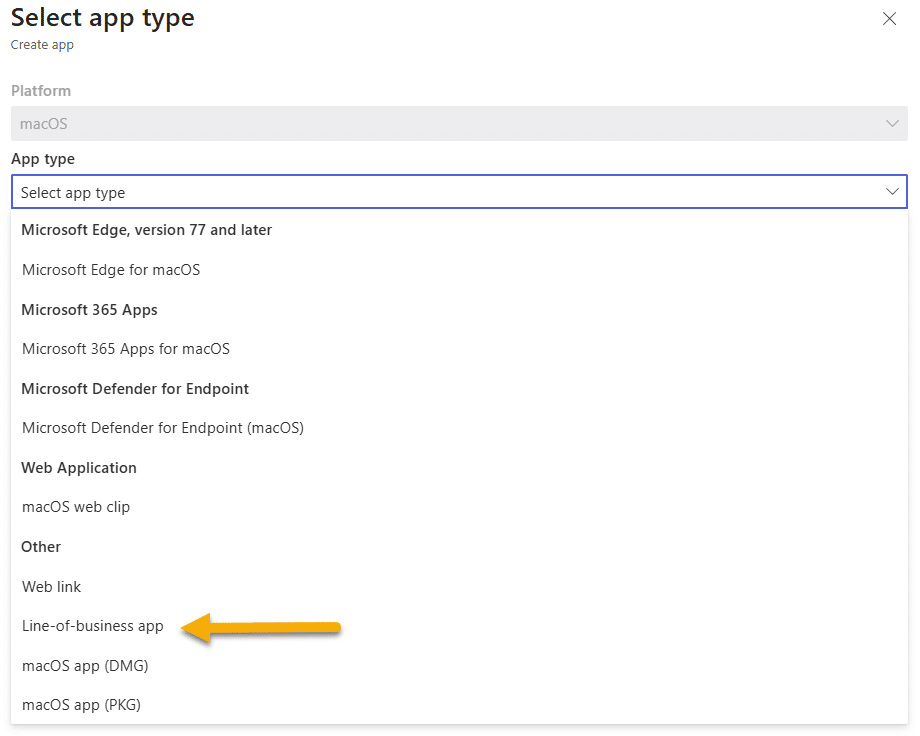
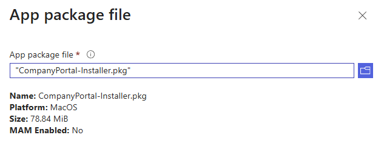
- Select the minimum OS version as “macOS Tahoe 26.0”
- Continue through the application page, and assign this application to the same group as you assigned the Platform SSO configuration to.
The Entire Setup Experience
Step 1. Initial Setup Screens
So the user in this case unboxes the device, powers it on and selects the region/language options;
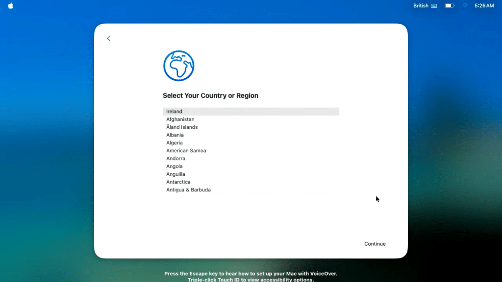
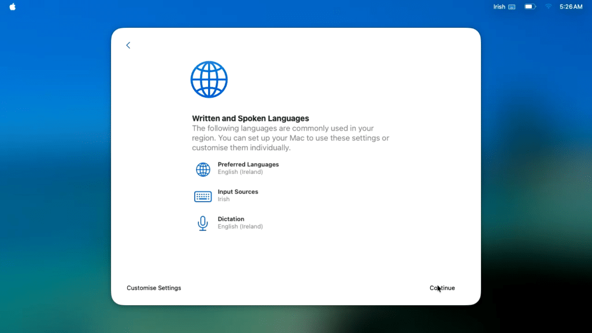
Step 2. Sign-In Dialogue
At this point you need to sign in using your corporate credentials, and approve your MFA method.
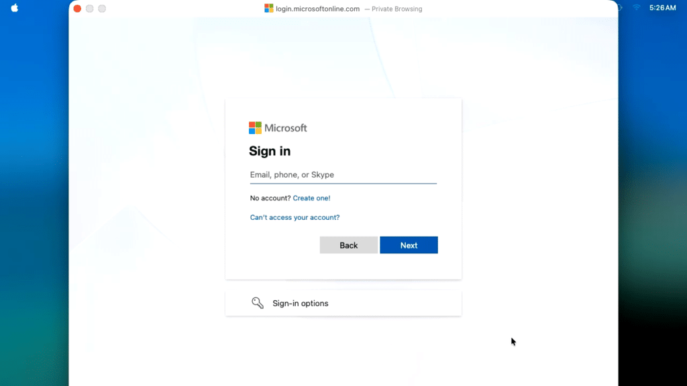
The device now contacts Intune and starts to receive its initial payload;
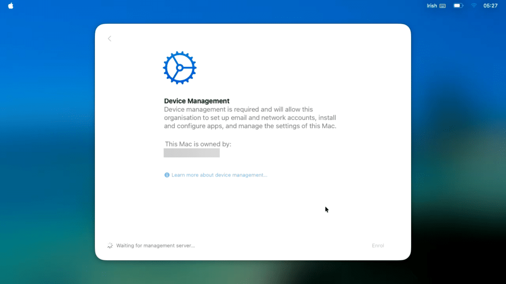
Step 3. Single Sign-On for Mac
This is where the experience is new, as the Intune Company portal will now be leveraged in the initial setup.

Step 4. Company Portal Sign-In & Registration
You will now be re-prompted to sign into the Microsoft Company Portal app;
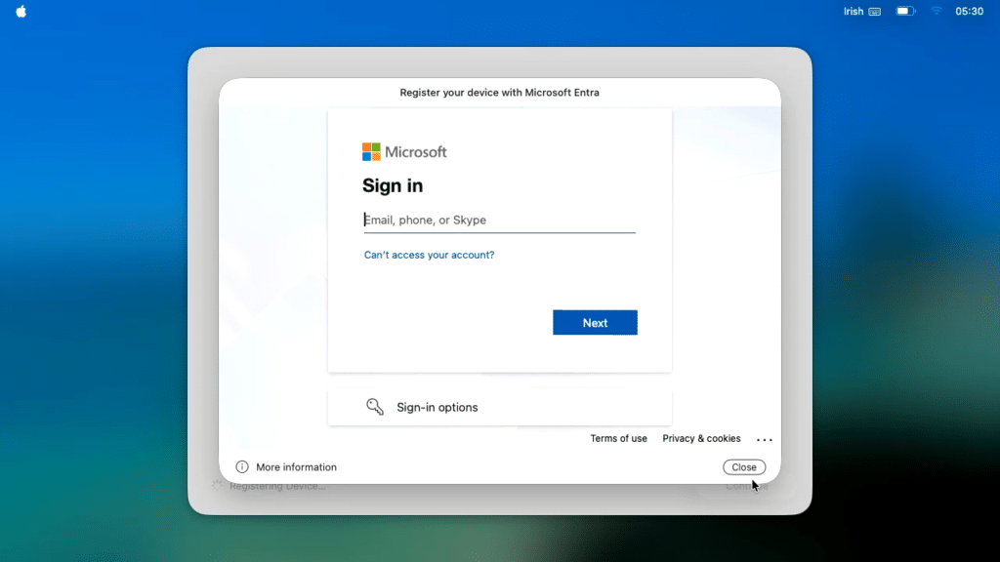
Once authenticated, the registration process takes place;
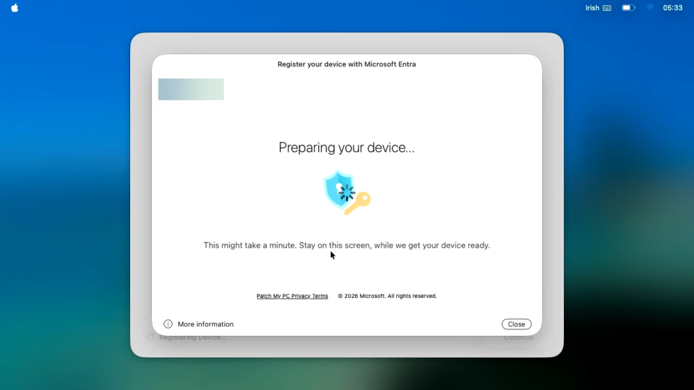
Step 5. Local Account Setup
The user is now prompted to create a password, as you will see, the fields are automatically populated based on the Settings Catalog policy created earlier;
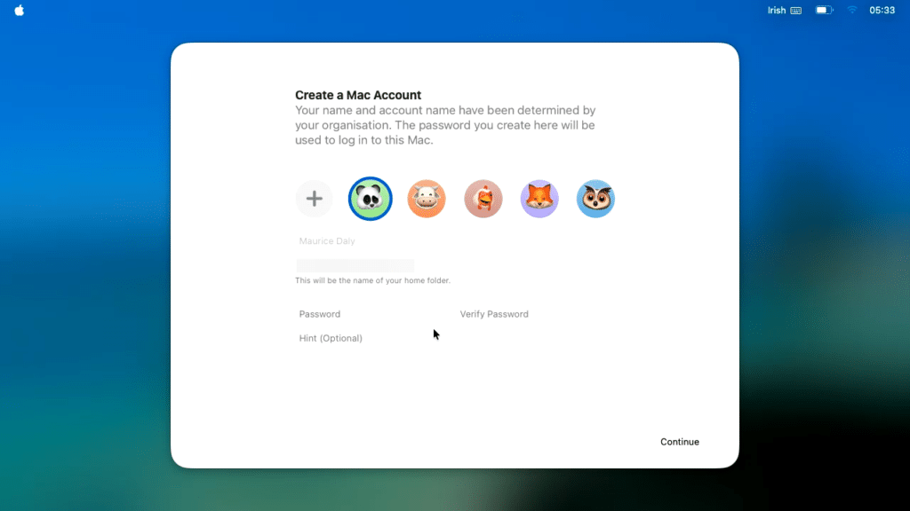
Post Setup
The user is now delivered to the desktop with no more registration prompts!
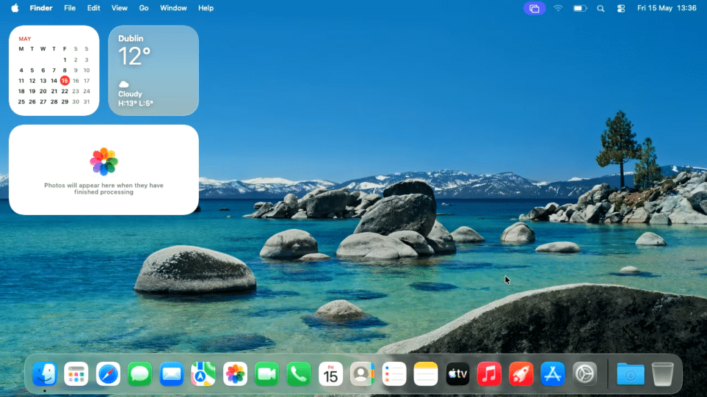
Should you wish to confirm the configuration, you can go into Settings\Users & Groups. Clicking on the “Edit” button next to “Network account server” will present the SSO Extension state:
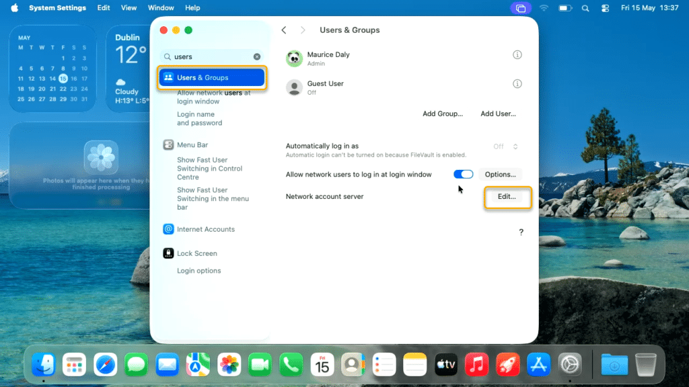
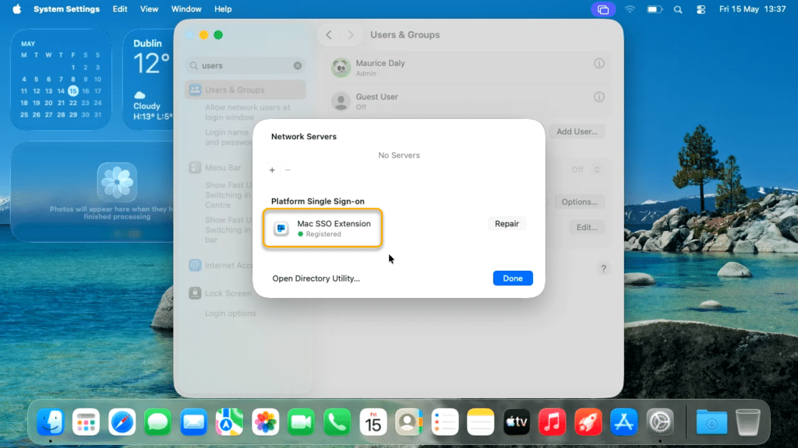
Clicking on the user will show you the registration state and SSO token states;
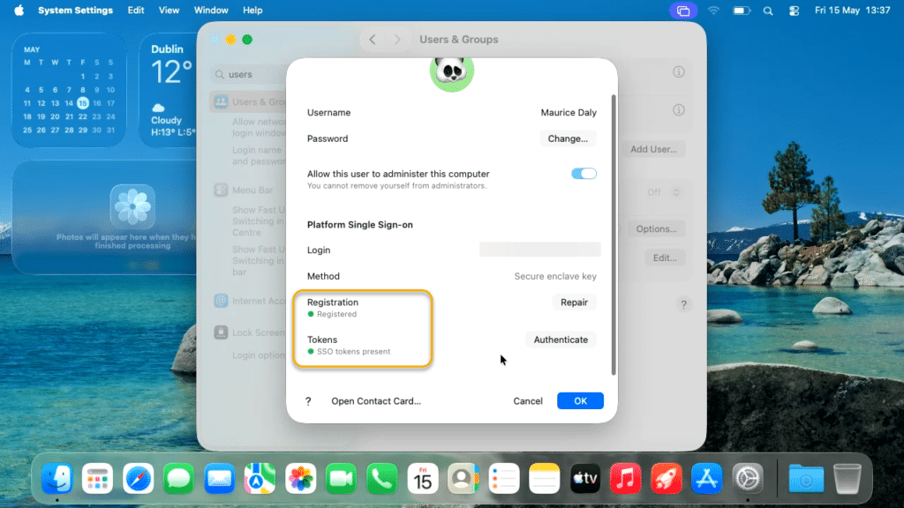
Conclusion
With this enhancement to Platform SSO, the experience of macOS and Windows from an onboarding perspective is now very similar, and is yet another blocker remover to embrace macOS as part of your supported environment.
More information can be found on the Microsoft docs – Configure Platform SSO for macOS devices in Microsoft Intune